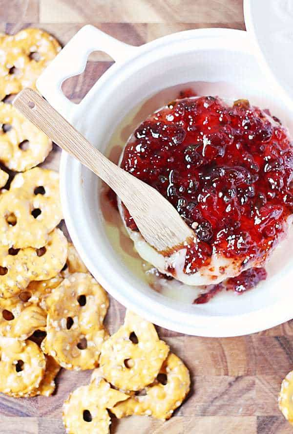

Baked Brie with Sweet Pepper Jelly

Description
Cheese lovers unite! This baked brie is a great appetizer.
The sweet pepper jelly combines with the savory brie for an amazing treat.
Ingredients
- 1 brie wheel
- 1/2 to 2/3 cup pepper jelly
Steps
- Preheat oven to 350 degrees. Remove top rind of cheese.
- Bake for 15 minutes or until desired consistency.
- Top with sweet pepper jelly and serve.